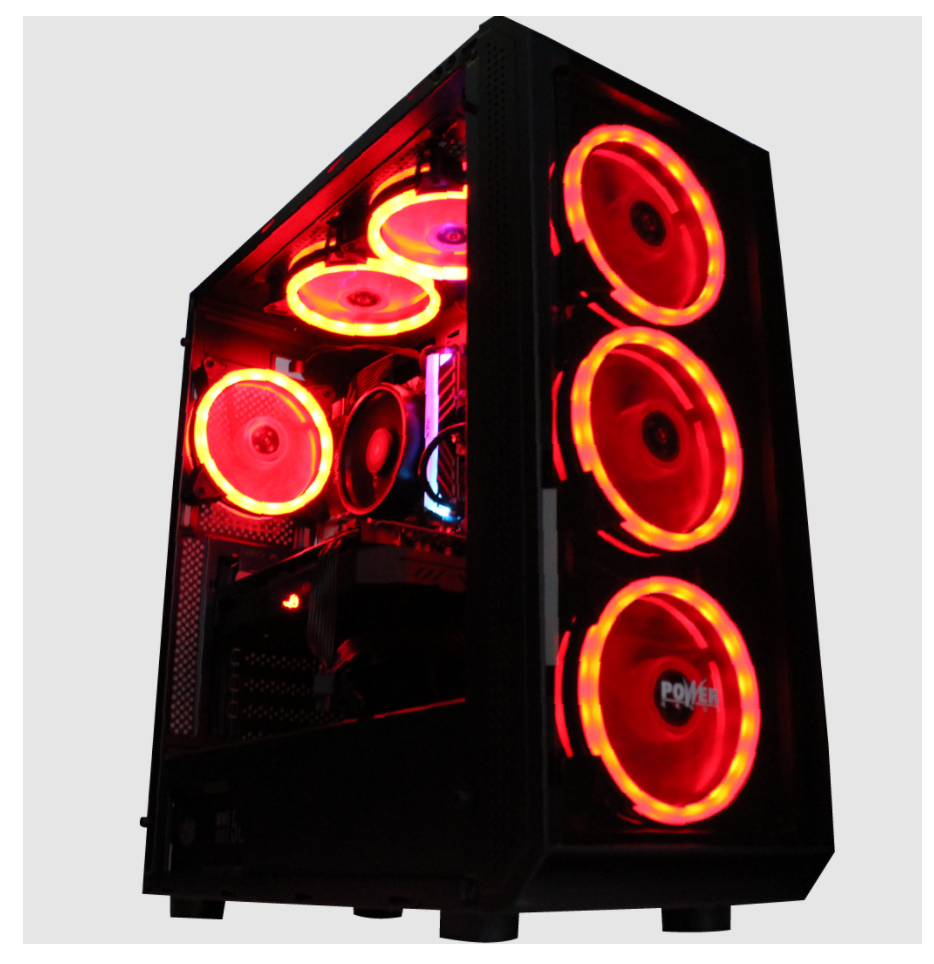

Características destacadas
Tecnología óptica, DPI ajustable: 1200 a 3200 para que se adapte a sus necesidades sin ningún controlador, implementación rápido de la posición del cursor.
Configuración avanzada para ajustar la precisión del puntero .
Diseño ergonómico para diestros
Sony Auriculares para la oreja con cable de la serie ZX, color blanco MDR-ZX110
$60.000
Sobre este artículo
Los controladores dinámicos de neodimio ligeros de 1.38 pulgadas ofrecen una respuesta rítmica fuerte incluso a las pistas más exigentes
El diseño giratorio del auricular permite un fácil almacenamiento cuando no los estás utilizando, y mejora la portabilidad cuando estás de viaje
Almohadillas acolchadas para una comodidad total y diseño plegable de espalda cerrada que sella el sonido
El amplio rango de frecuencia, que abarca 12 Hz a 22 kHz, ofrece graves profundos, rango medio rico y altos elevados
Enchufe: mini enchufe estéreo en forma de L de 0.138 in
PC Gamer NVIDIA BATTLEBOX SUPER

$4,299,000
Tarjeta de Video
NVIDIA GeForce RTX 3060 12GB GDDR6
Procesador
AMD Ryzen 5600G / 12 Threads 4.4Ghz T
Tarjeta Madre AMD
Chipset B450 (Sop. 64GB RAM, M.2, USB 3.0)
Memoria RAM
16GB Blindada 3200Mhz
Fuente de Poder
Iceberg 600W 80+ Bronze
Disco Duro (HDD), 1TBs SATA
Unidad de Estado Sólido (SSD), 120GB SATA3
Imagen 3 de 6 de Monitor gamer LG 32UN550 led 31.5" blanco 100V/240V
$1.903.000
Pantalla led de 31.5".
Tiene una resolución de 3840px-2160px.
Relación de aspecto de 16:9.
Panel VA.
Su brillo es de 300cd/m².
Tipos de conexión: Jack 3.5 mm, 2 HDMI, DisplayPort 1.4.
Altavoces incluidos.
Es giratorio y reclinable.
Comodidad visual en todo momento.
MEMORIA RAM DDR4 1×16 3600 MHZ VENGEANCE RS 16GB
$470.000
Ilumina tu sistema con una iluminación RGB dinámica de seis LED direccionables individualmente, encerrado en un tubo de luz panorámica que ofrece una visión sin obstáculos desde prácticamente cualquier ángulo.
Elige entre docenas de perfiles de iluminación preestablecidos o crea tu propio software CORSAIR iCUE.
Optimizado para el máximo ancho de banda y tiempos de respuesta reducidos en las últimas placas base Intel y AMD DDR4.
Un PCB de rendimiento personalizado garantiza una fuerte calidad de señal para un rendimiento y estabilidad superiores.
Los módulos RGB RS de Vengeance solo utilizan chips de memoria bien controlados para altas velocidades fiables con el potencial de overclocking.
ZOTAC Gaming GeForce RTX 3050 Twin Edge OC 8GB
$392.08
Máxima resolución de pantalla 7680 x 4320
Velocidad de memoria 1807 MHz
Coprocesador de gráficos NVIDIA GeForce RTX 3060
Marca Chipset NVIDIA
Tamaño de RAM de la tarjeta gráfica 12 GB